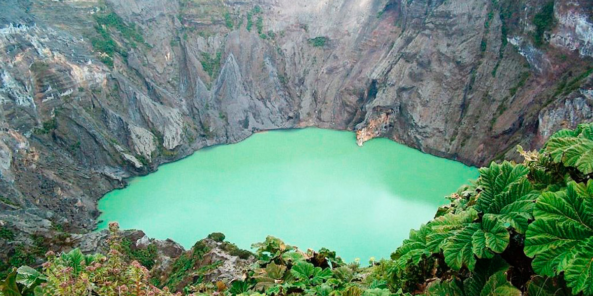
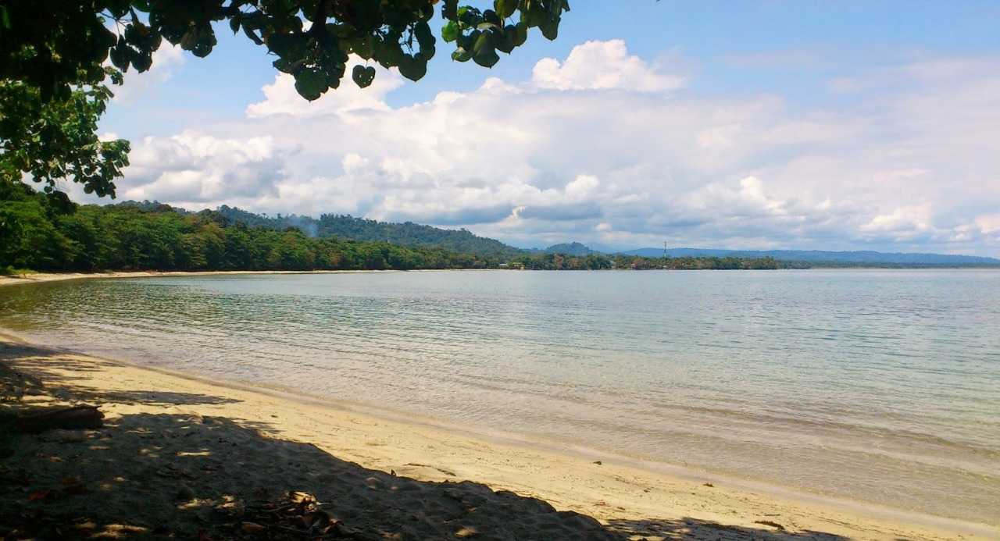

Costa Rica, considerada una joya de Centroamérica, es un paraíso natural y ecológico con uno de los índices de biodiversidad más altos del planeta en comparación con su pequeño espacio. Se encuentra rodeada por dos océanos, a su vez está embellecida por montañas y volcanes. Cuenta con increíbles lugares turísticos, lo que la convierte en un país ideal para visitar en vacaciones o vivir toda una vida. Si estás en busca de aventura o relajación, Costa Rica te ofrece lugares espectaculares, los cuales te permitirán elegir tu propio ritmo. Si no sabés por donde comenzar, a continuación, te mencionamos cuatro lugares turísticos del país que debés visitar.
| Volcán Arenal |  |
El volcán Arenal está situado en el distrito de La Fortuna, cantón de San Carlos, en la provincia de Alajuela. |
| Volcán Irazú |  | El volcán Irazú es un volcán en escudo activo ubicado en Costa Rica, en la Cordillera Volcánica Central, en el interior del parque nacional que lleva su nombre, a unos 32 km al norte de la ciudad de Cartago. |
| Manuel Antonio |  |
El Parque Nacional Manuel Antonio es una área de conservación natural localizada en la costa pacífica central de Costa Rica, en el cantón de Quepos, provincia de Puntarenas. |
| Playa Cahuita |  | Playa Blanca Cahuita. Ubicada en la provincia de Limón, en el distrito de Talamanca, en Costa Rica. Es la entrada del Parque Nacional Cahuita, célebre por su biodiversidad y por ser uno de los más grandes arrecifes naturales de corales en el mundo, galardonada con la “Bandera Azul Ecológica” por su protección. |